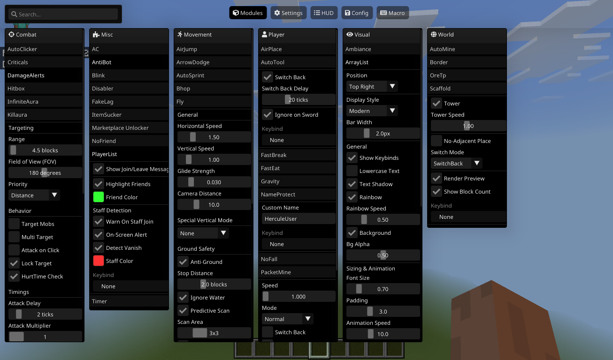

What is Hercule?
Hercule is a high-performance client for Minecraft for Windows, designed to elevate your gameplay. With a suite of powerful modules, a sleek and intuitive interface, and a focus on stability, Hercule provides the tools you need to dominate, explore, and create like never before.
Core Features:
- Advanced Combat: Killaura, Aimbot, TP Aura, and more to gain the upper hand.
- Stunning Visuals: Customizable ESP, Tracers, and a clean ClickGUI.
- Fluid Movement: Fly, Speed, and a robust pathfinding system to navigate the world with ease.
- Powerful Utilities: A versatile command system and seamless module integrations.
Intuitive & Powerful Interface
Manage every feature with ease through our clean, modern, and fully customizable ClickGUI. Everything you need is just a click away.

Get Started
Download the latest version of Hercule and unleash your potential.
Download Hercule v1.0Compatible with Minecraft for Windows v1.XX.XX